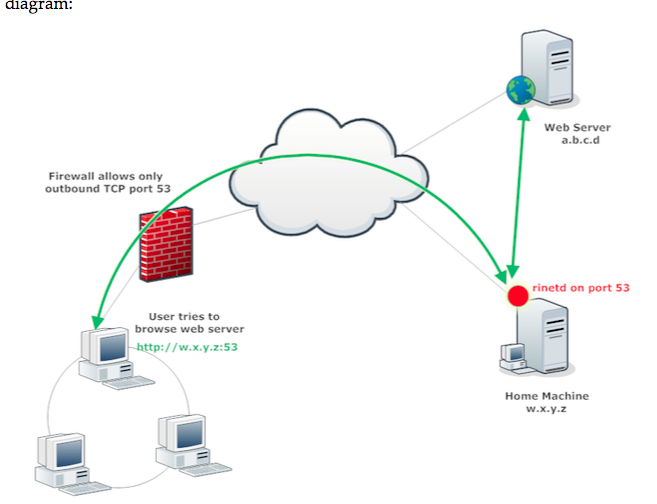

rinetd
https://www.boutell.com/rinetd/
TCP redirection server
Example
Allow port forwarding(creates simple proxy)
configuration
/etc/rintetd.conf
bindadress bindport connectaddress connectport
w.x.y.z 53 a.b.c.d 80
